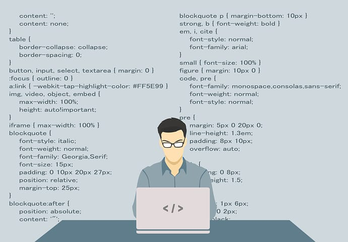
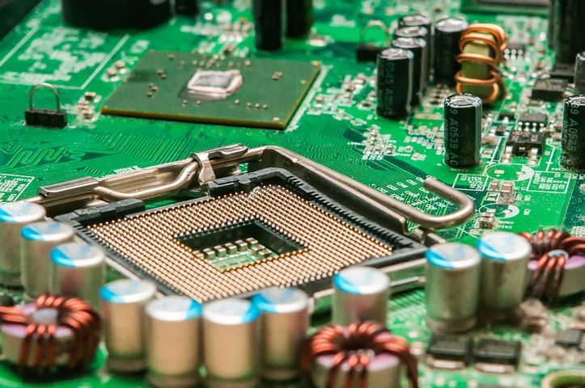

FAQ'S
1.what is B.tech and what is the duration to complete B.tech?
B.tech stands for Bachelor Of Technology is a professional undergraduate engineering
degree.
It is a programme of 4 years.The national level examinations for engineering are JEE
Mains and `
JEE Advanced. The state level examination is EAMCET.
2. What can be chosen after intermediate?
If the candidate has completed intermediate with
MPC:
* BE(Bachelor Of Engineering)
* B.tech (Bachelor Of Technology)
* BSC in math
* BBA (Bachelor Of Business Administration)
* BA(Bachelor of Architecture)
BIPC:
* MBBS(Bachelor of Medicine and Bachelor of Surgery)
* BDS (Bachelor of Dental Surgery)
* BAMS( Bachelor of Ayurveda, Medicine and Surgery)
* BUMS(Bachelor of Unani Medicine & Surgery)
* BHMS( Bachelor of Homeopathic Medicine and Surgery)
* B.pharm(Bachelor Of Pharmacy)
* D.pharm(Diploma in Pharmacy)
* BSC ( Bachelor of science)
CEC:
* CA( Chartered Accountancy )
* B.com( Bachelor of Commerce)
* BA(Bachelor of Arts)
* BBA(Bachelor Of Business Administration)
3.Which field is best in B.tech?
Based on placements best courses in btech are
1. Computer science and engineering
2. Electronics and communication engineering
3. Aerospace Engineering.
4. Information Technology
5. Chemical Engineering.
6. Electrical and Electronics Engineering.
7. Petroleum Engineering.
8. Telecommunication Engineering.
9. Machine Learning and Artificial Intelligence.
10. Robotics Engineering.
11. Biochemical Engineering.
4. Which is the best intermediate stream?
If you are
Good in science- BIPC
Good in Math- MPC/MEC
Not interested in both- CEC
5. How many marks should we score in EAMCET to get a free seat in a good
college?
Candidates must secure 70-79 marks i.e.25,000-15,000 rank to get a free seat in a
good college.
6. What are top 10 Engineering colleges in Telangana?
1. JNTUH(Jawaharlal Nehru Technological University)
2. CBIT( Chaitanya Bharathi Institute of Technology )
3. VNRVJIET(Vallurupalli Nageswara Rao Vignana Jyothi Institute of Engineering and
Technology)
4. CVR college of Engineering
5. BVRIT(B V Raju Institute of Technology )
6. IARE(Institute of Aeronautical Engineering)
7. VMEG(Vardhaman College Of Engineering)
8. Anurag University
9. VCE(Vasavi College of Engineering)
10. KL University
7. What are the top 5 Engineering colleges in Telangana?
1. JNTUH(Jawaharlal Nehru Technological University)
2. CBIT( Chaitanya Bharathi Institute of Technology )
3. VNRVJIET(Vallurupalli Nageswara Rao Vignana Jyothi Institute of Engineering and
Technology)
4. CVR college of Engineering
5. BVRIT(B V Raju Institute of Technology )
8. What is the average package of CSE?
The average package offered for a CSE guy is 10-15 lakhs per annum. The highest
Package is 30 lakh per annum.
9.What is Computer Science Engineering?
Computer Science Engineering (CSE) is a 4 years degree encompasses a variety of
topics that relate to computation, like analysis of algorithms, programming
languages, program design, software, and computer hardware.

10. What is Mechanical Engineering?
Mechanical engineering is a 4 years degree that combines engineering physics and
mathematics principles with materials science, to design, analyze, manufacture, and
maintain mechanical systems.
11. What is Electronics and Communication Engineering?
Electronics and Communications Engineering (ECE) is a 4 year degree involves
researching, designing, developing, and testing electronic equipment used in various
systems.Also conceptualize and oversee the manufacturing of communications and
broadcast systems.

12. What is Civil Engineering?
Civil engineering is a 4 year degree, the profession of designing and executing
structural works that serve the general public, such as dams, bridges, aqueducts,
canals, highways, power plants, sewerage systems, and other infrastructure.
13. In which field the highest package is offered?
Computer Science Engineering(CSE). The average package offered for a CSE guy is
10-15 lakhs per annum. The highest Package is 30 lakh per annum.
14. How many counseling rounds are conducted for EAMCET?
The counseling process conducts 3 rounds. Consequently, Students need to register
online in order to participate in the Counseling round.
15. What is the process of counseling to put colleges in order?
1. Visit TS EAMCET 2022 website
2. Open the Counseling link
3. Depending on the rank select atleast 10 colleges
4. Select the fields of Engineering
5. Arrange colleges and courses in order as per your own preference
NOTE: Preferred colleges and branches must be entered at first.
16. What are the average marks to get a free seat in EAMCET?
50-69 marks i.e25,000 to 50,000 rank is the average to get a free seat in
EAMCET.
17. What is BBA?
Bachelor of Business Administration (BBA) is a 3 year professional undergraduate
business management course that imparts managerial and entrepreneurial skills to
students from all backgrounds like Science, Arts, and Commerce. BBA courses are
available in various specializations such as Finance, Marketing and HR Management.
18. What to do after BBA?
* Specialize in Management (MBA
* Become a Data Scientist
* Join Public Services (UPSC)
* Become a Digital Marketer
* Become a Product Manager
19. What is an MBA?
A master of business administration (MBA) is a graduate degree that provides
theoretical and practical training for business or investment management. An MBA is
designed to help graduates gain a better understanding of general business
management functions.
20. What are the best colleges for BBA in telangana?
1. ICFAI Business School
2. Vishwa Vishwani school of Business
3. St Joseph’s degree and PG college
4. Dr YSR Institute of tourism and hospitality management
5. St Pious X college
21. How many marks do you need to get a free seat in the top 10 Engineering
colleges?
50 to 70 marks needed to be scored to get a free seat in top 10 engineering
colleges.
22. How many marks do you need to get a free seat in the top 5 Engineering
colleges?
60 to 70 marks needed to be scored to get a free seat in top 10 engineering
colleges.
23. How many branches are there in engineering?
1. Civil engineering
2. Mechanical engineering
3. Computer science engineering
4. nformation technology engineering
5. Electrical and Electronics engineering
6. Electronics and communication engineering
7. Aeronautical engineering
8. Chemical engineering
9. Biomedical engineering
10. Petroleum engineering
24. Which companies mostly offer Computer Science Engineering?
1. Amazon
2. Google
3. Microsoft
4. IBM Research
5. TCS
6. HP
7. Microsoft
8. Adobe
9. CISCO
10. Intel
25. Which companies mostly offer Mechanical Engineering jobs?
1. Ardee Engineering Company
2. Caltech Engineering Company Private Limited
3. NOX Engineering
4. Vijaya Bhanu Engineering India (P) Ltd.
5. Anewa
6. CEAD
7. Frugal Technologies
8. Amarshiva Engineering
9. KG-MECH
26. Do intermediate marks are interlinked with EAMCET marks?
Marks obtained in intermediate exams have a 25% weightage in calculation of Eamcet
rank.
27. How many marks do we have to score in intermediate to get a seat in EAMCET?
Marks obtained in intermediate exams have a 25% weightage in calculation of Eamcet
rank.Marks without EAMCET are not considered. Candidates must attempt EAMCET and
score enough marks to get a seat in EAMCET.
28. What is the fee structure of top 10 engineering colleges in management
quota?
1. JNTUH(Jawaharlal Nehru Technological University)-1,19,223
2. CBIT( Chaitanya Bharathi Institute of Technology )-1,86,733
3. VNRVJIET(Vallurupalli Nageswara Rao Vignana Jyothi Institute of Engineering and
Technology)-1,31,000
4. CVR college of Engineering-1,15,000
5. BVRIT(B V Raju Institute of Technology )-1,20,000
6. IARE(Institute of Aeronautical Engineering)=1,10,00
7. VMEG(Vardhaman College Of Engineering)-1,25,000
8. Anurag University-1,25,000
9. VCE(Vasavi College of Engineering)-1,30,000
10. Gokaraju rangaraju institute of engineering and technology-1,30,500
29. What is M.tech?
MASTER OF TECHNOLOGY(Higher education)
It offers national diplomas and a Master of Technology (MTech) degree in hospitality
management, tourism and food and beverage management.
30. What is agricultural engineering?
Agricultural engineering, also known as agricultural and biosystems engineering, is
the field of study and application of engineering science and designs principles for
agriculture purposes,
combining the various disciplines of mechanical, civil, electrical, food science,
environmental, software, and chemical engineering to improve the efficiency of farms
and agribusiness enterprises as well as to ensure sustainability of natural and
renewable resources.
31. What is hotel management?
Hotel management is really about overseeing every operation of the property. This
requires knowledge of distribution strategy, finance, customer service, staff
management, marketing, and more.
32. WHAT ARE B CATEGORY SEATS.?
Of the sanctioned intake in a branch of engineering, 70% of the seats are called
Category – A seats or Convener seats. The remaining 30% seats are called Category –
B seats or Management Quota Seats.B category seats are private management seats
governed totally by private bodies and costs much than A category
AVERAGE SALARY OF CS ENGINEER - 3 LPA
AVERAGE SALARY OF MECH ENGINEER - ₹358,262
AVERAGE SALARY OF CIVIL ENGINEER - ₹310420
AVERAGE SALARY OF EC ENGINEER - 2.4 LPA
AVERAGE SALARY OF EE ENGINEER - ₹383877
AVERAGE SALARY OF IT ENGINEER - ₹5,15,832
33. HOW TO APPLY FOR B CATEGORY SEATS ?
ANS:Seats under the B-category are filled based on JEE main score, Intermediate
marks and also under the management quota.
34. HOW MUCH SCHOLARSHIP IS BEING OFFERED BY GOVT ?
ANS: Below 10k rank free seat for any community student.
Below 30k 35k fee reimbursement for any community student.
If student belongs to SC ,ST ,Muslim Minority free seat irrespective of rank.